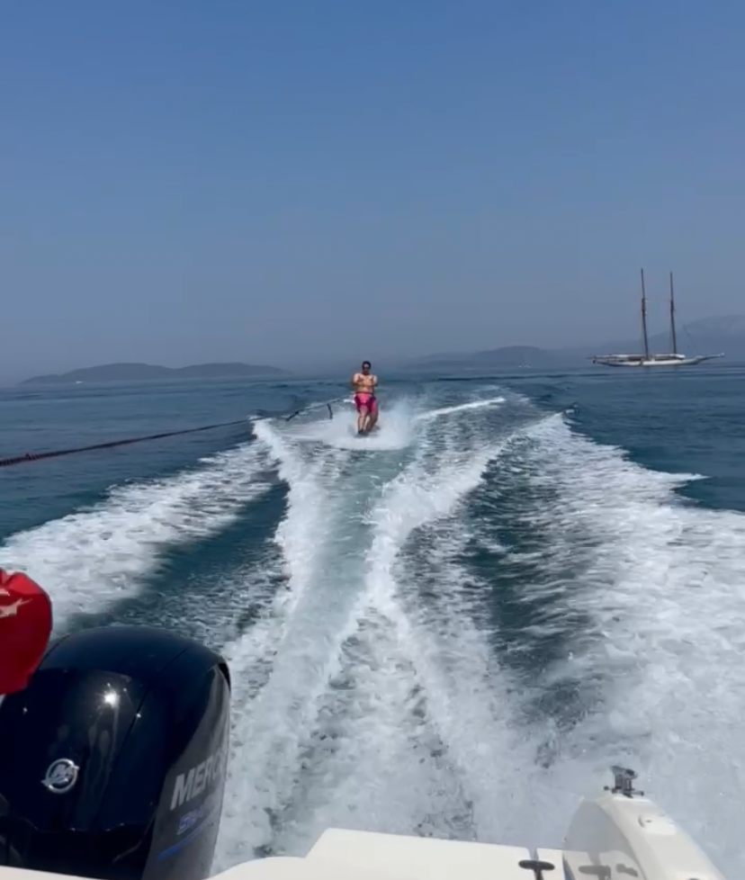
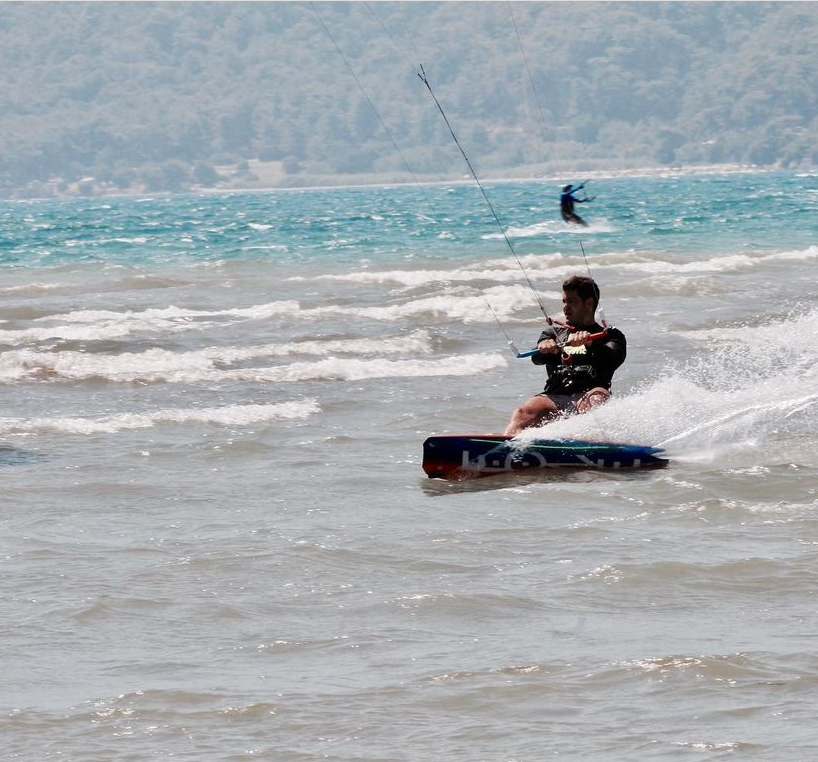
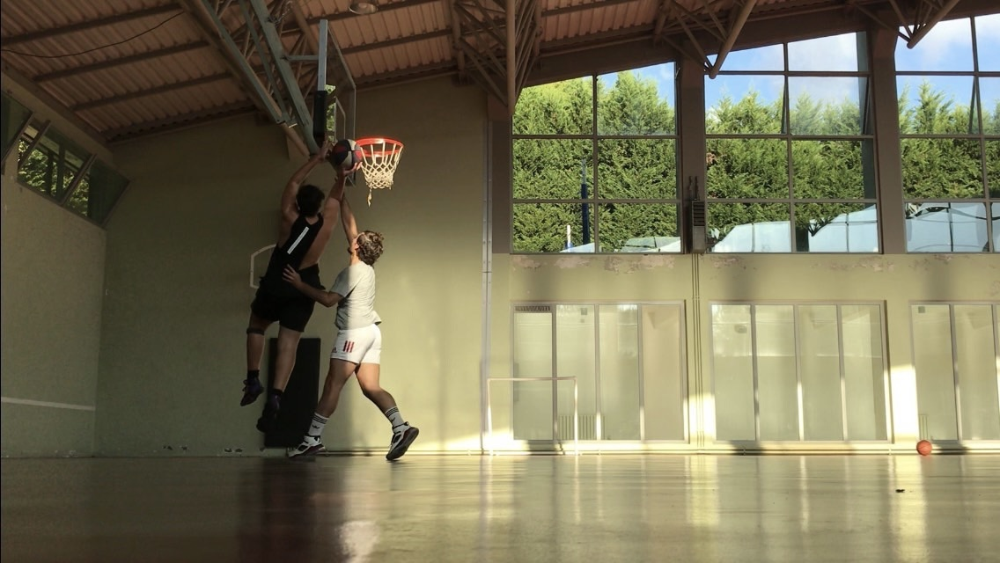
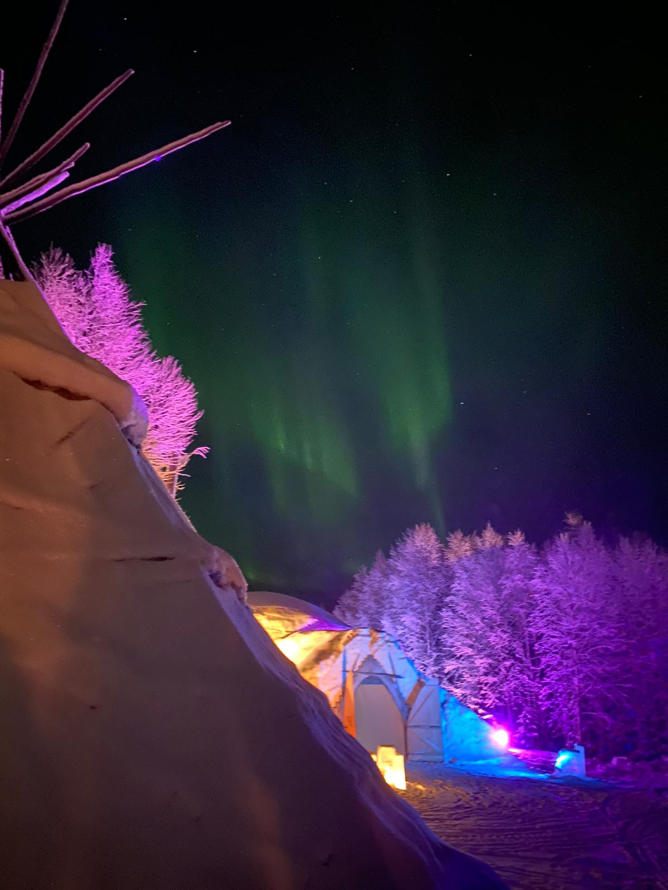
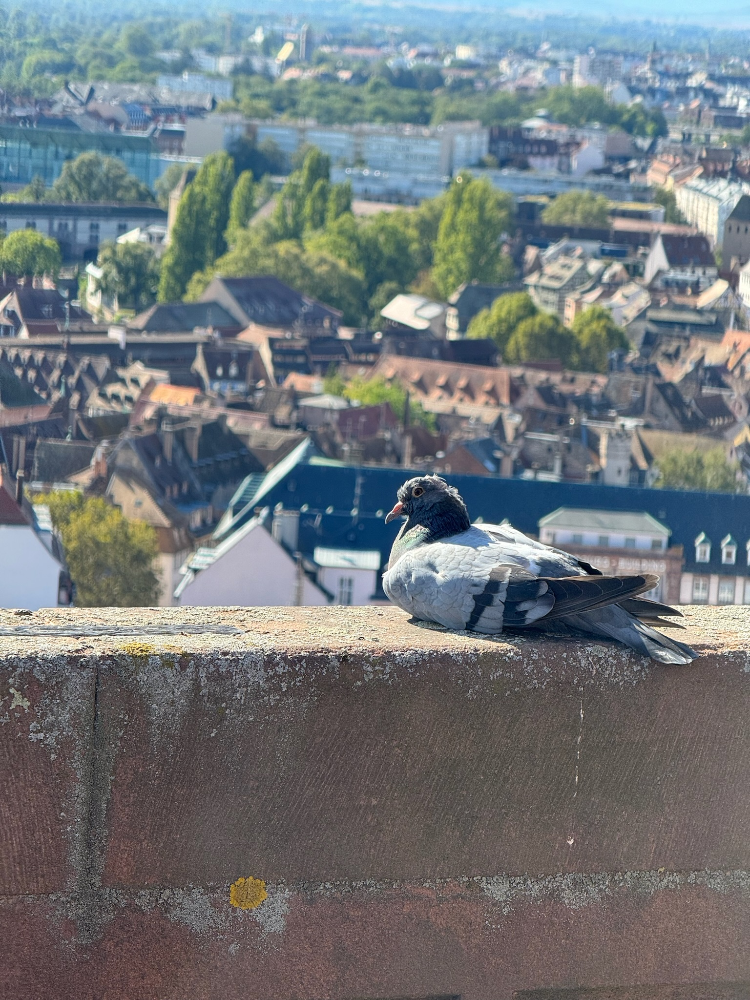
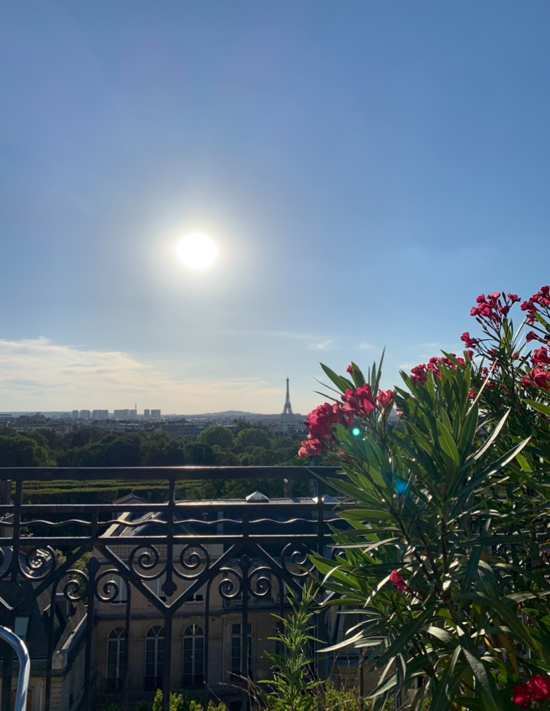
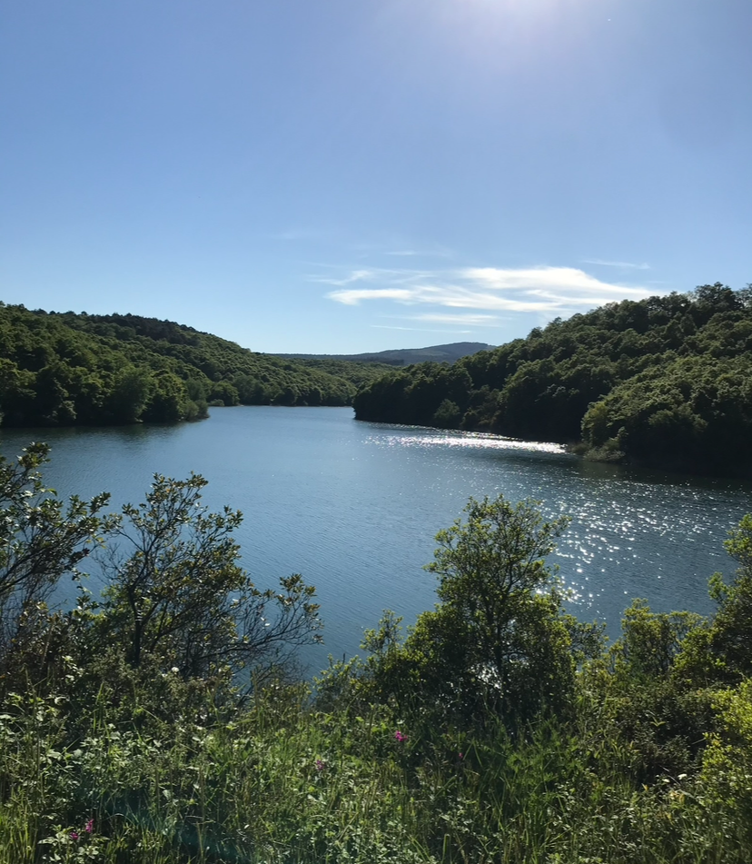

EMRE YALIN
Hi everybody! My name is Emre Yalin and I'm a first year student at ESSEC Business School and right now pursuing a Global Bachelor in Business Administration. Welcome!
ESSEC
ABOUT ME
I come from Turkey, more specifically from Istanbul. I attended a German school in middle school and one of the best French high schools in Turkey for my secondary education. As a result, I currently speak four languages: German, English, French, and Turkish. I am very interested in sports. I will talk about some of the sports I am interested in and my hobbies. you will be able to discover it as you scroll down my page.
My Hobbies




My hobbies include playing basketball, watching football, playing video games, wakeboarding, kiteboarding and offroad motorcycling. I have been engaging in these hobbies since my childhood because I lived in a house with a garden, away from the city. I would always do these activities with my brother.
Landscape photos






The only hobby I haven't mentioned to you is taking landscape photos. I really enjoy taking pictures related to nature from different countries I visit or from my own country. Actually, I don't like photography much and I take most of the photos carelessly (while walking, on a motorcycle, etc.), but I still think that I capture beautiful moments.